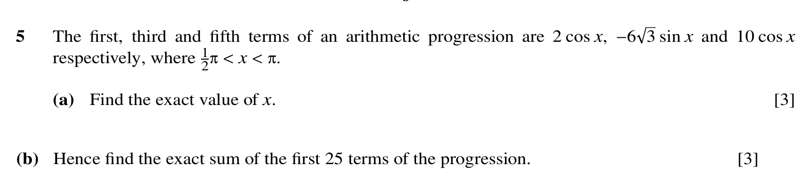
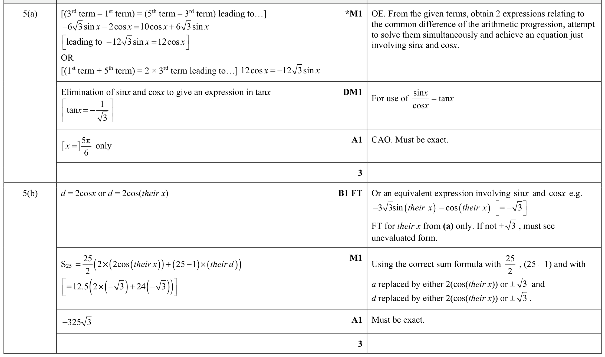

12autumn21_q05 / Q5
p1 12autumn21
paper_total_mismatch


- Validation
- fail
- Mapping
- pass
- Visual
- review
- Text only
- fail
- Question crop
- low
- Mark crop
- high
- Q total
- 6
- MS total
- 6
- Paper total
- 74
- Question image
- p1/12autumn21/questions/q05.png
- Mark image
- p1/12autumn21/mark_scheme/q05.png
- Source PDF
- input/question_papers/9709 Mathematics November 2021 Question paper 12.pdf
Validation flags
paper_total_mismatch
Visual flags
contains_inequality_or_region_promptcontains_trig_expressionocr_text_sparse_or_merged
Review flags
crop_split_prompt_regionscrop_uncertainexcluded_boilerplate_copyright_footerlow_classification_confidencelow_confidence_question_cropobject_cue_conflict_with_method_scoringocr_merged_sparse_lower_regionpaper_total_mismatchpaper_total_rescan_triggeredtopic_uncertaintopic_uncertain_low_quality_textweak_question_text
5 The first, third and fifth terms of an arithmetic progression are 2 cos x, -63 sin x and 10 cos x respectively, where _{2}^{1}π < x < π. (a) Find the exact value of x. [3] (b) Hence find the exact sum of the first 25 terms of the progression. [3]